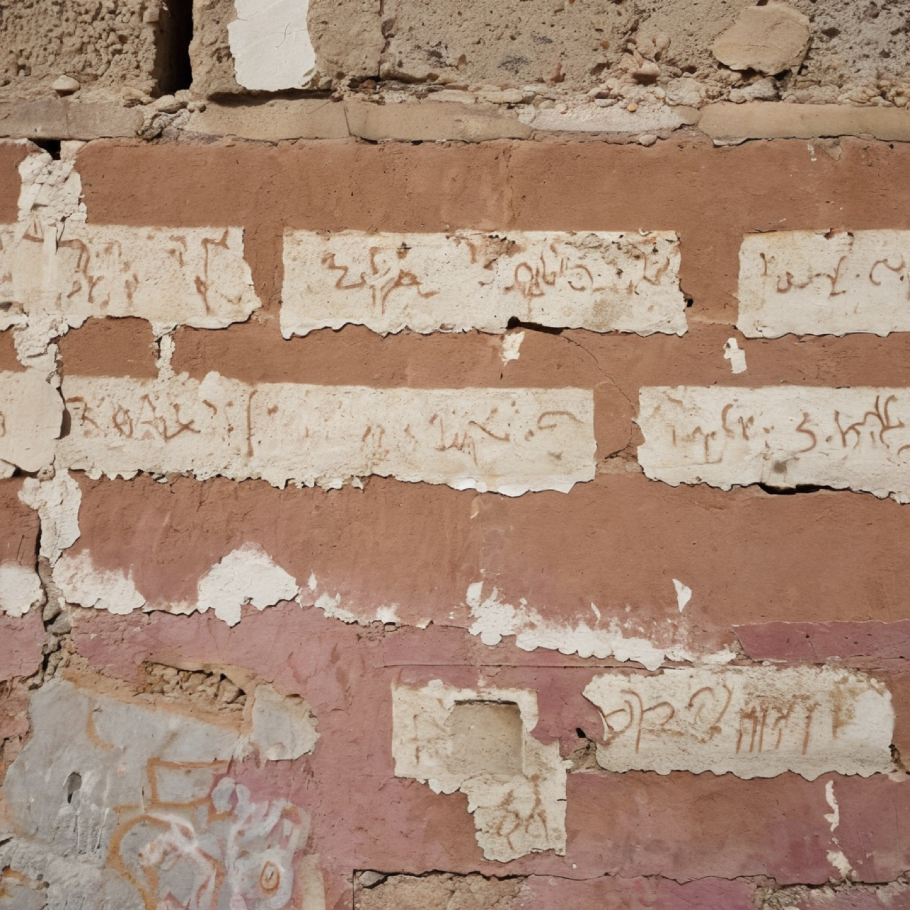
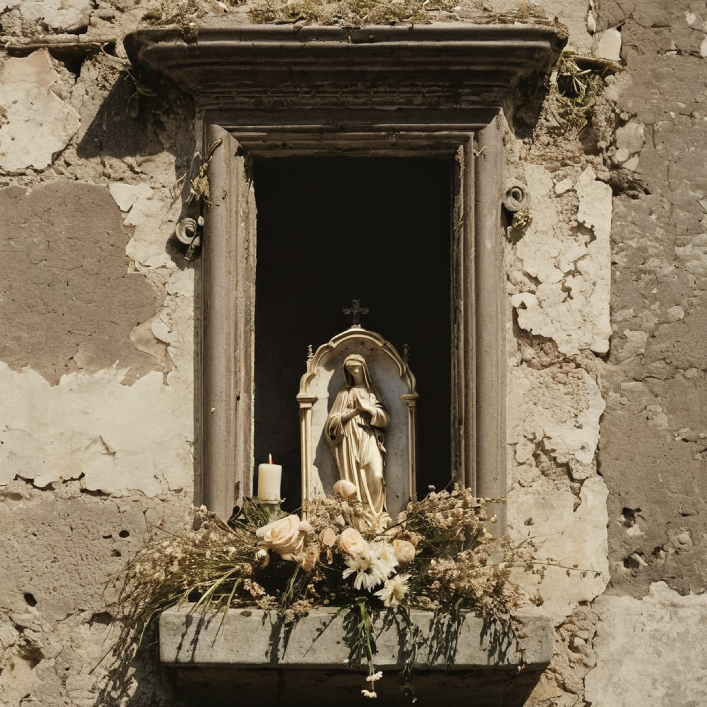
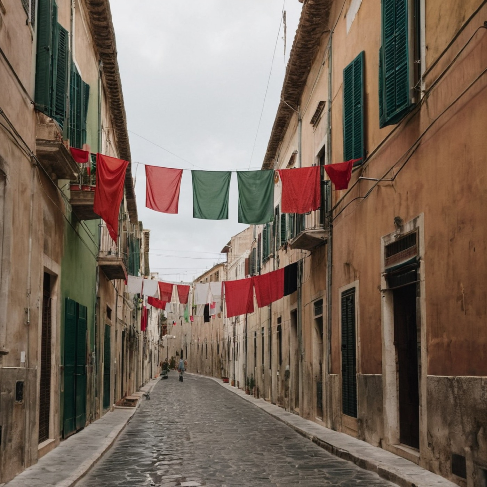
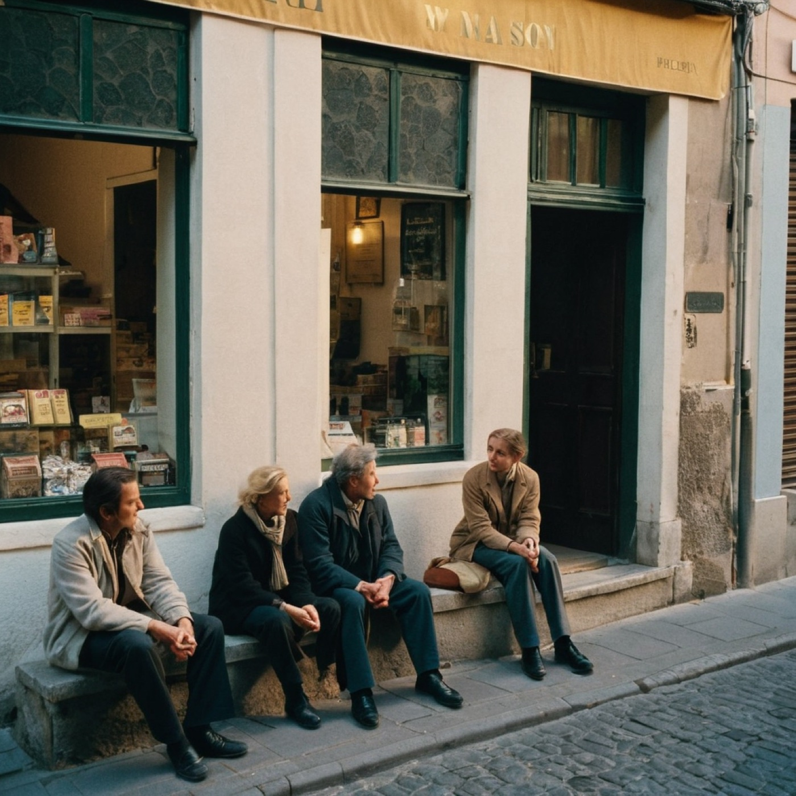
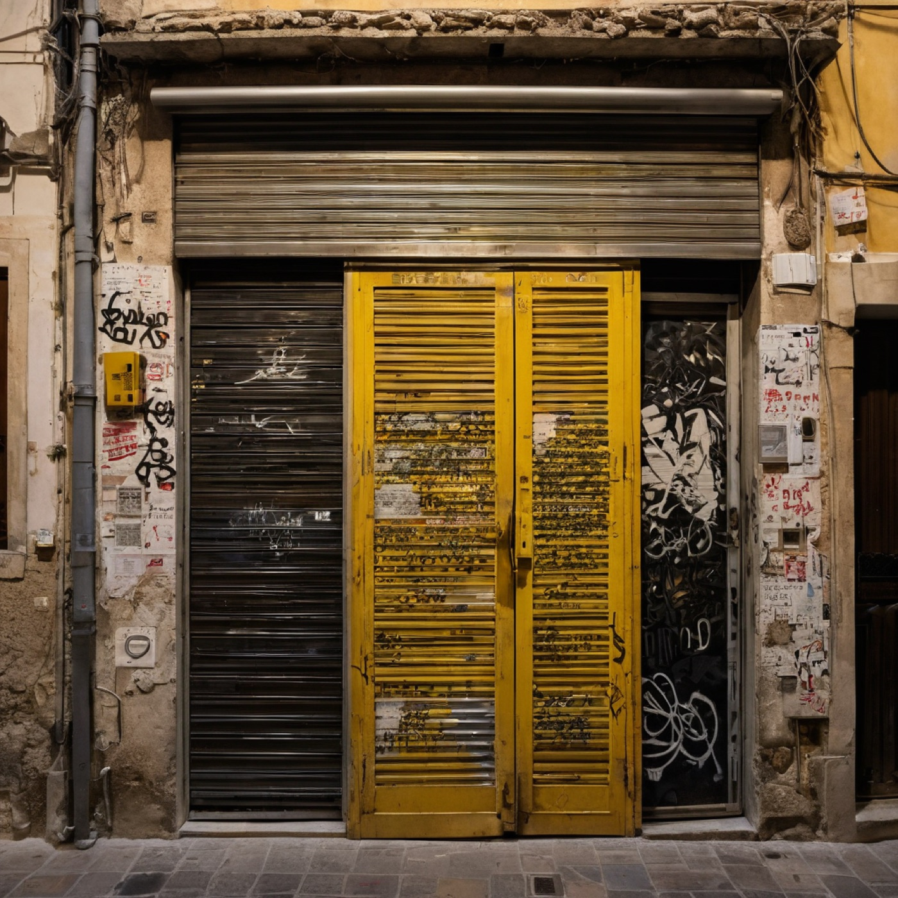
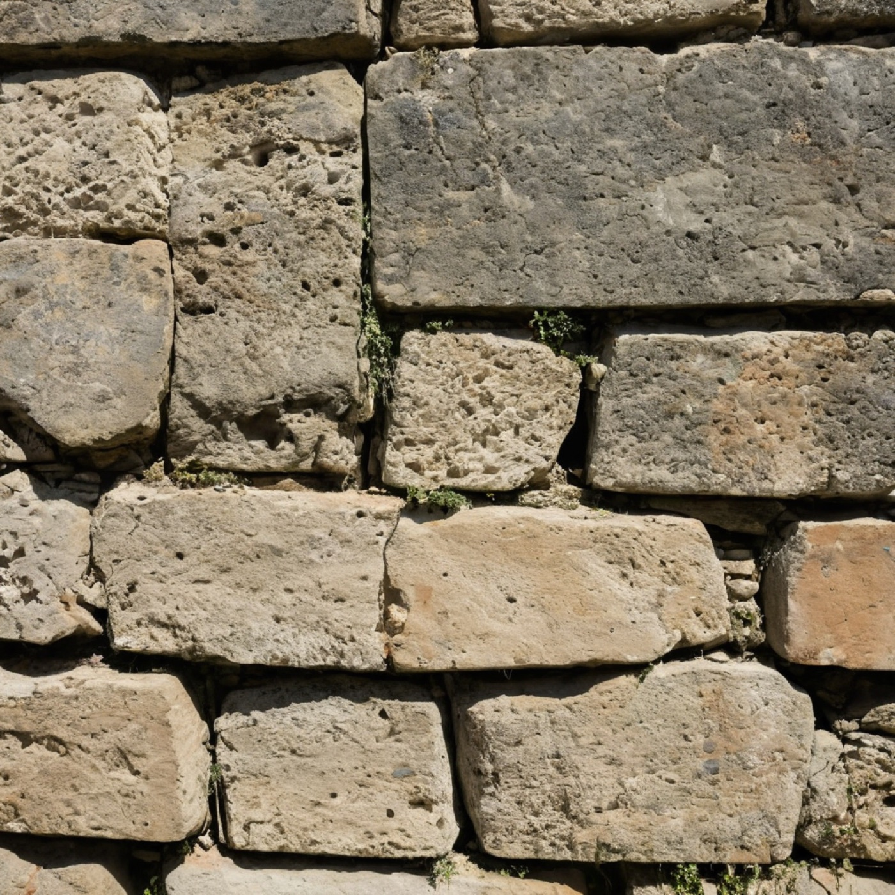

Specimens, imagined and rendered. Not photographs of the walk, but photographs of what the walk conjured — the patterns the glossary tried to name. Each plate stands in for an entry whose proper habitat is a street at dusk, a wall at arm-height, a shrine nobody maintains.

plate 01A geological record of solo working conditions. The wall remembers every hand that could afford the reach, and stops precisely where bodies stop.

plate 02The predictable sequence of failure when the candle-quorum drops below threshold. The plaster outlasts them all.
Any light not installed for wayfinding that nonetheless performs it. Smuggles the incidental information someone lives here inside its directional pull.

plate 04A regime's first anxiety. Reads the pulse before the pulse has named itself. Regulators go after statues because they think permanence equals seriousness; politics is serious on Tuesday.

plate 05The surplus use-value that unlabeled seating extracts from labeled seating. The more explicitly a thing is offered, the less fully it tends to be used.

plate 06A civic resource allocated by schedule rather than ownership. The shutter publishes itself through closure, by a contract nobody drafted and everyone honors.

plate 07The week the transition happened, nobody recorded. The individual tag stopped being legible and the aggregate began to be — a reef crossing from graveyard to organism.
An older protocol than the streetlamp. What actually lights a street is any sustained reason for someone to be there after dark; the cloister proves the non-commercial variant.